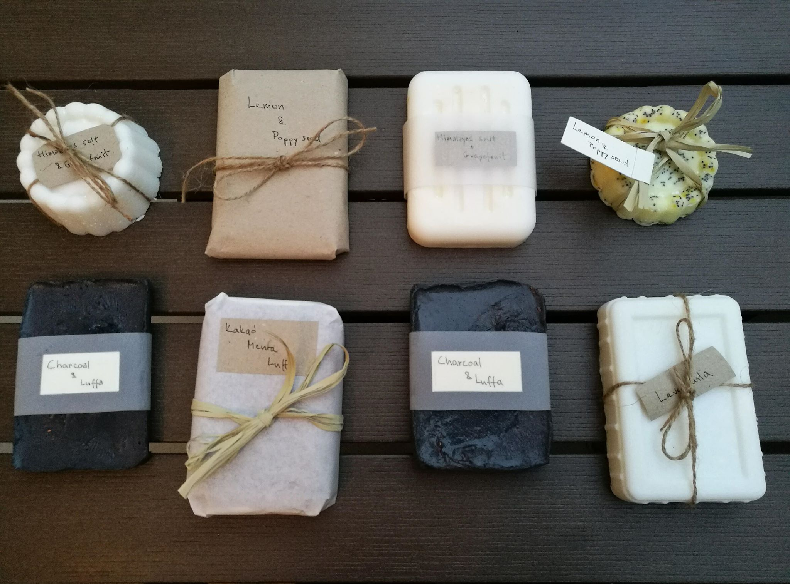
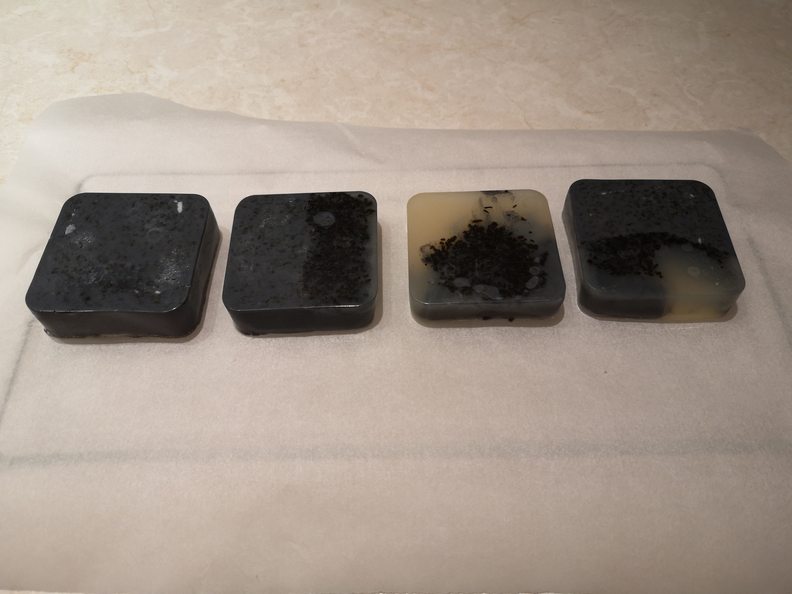
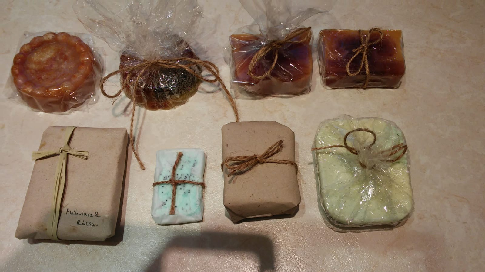

Nagyon szép szappanok vannak itt. Voila:
Mindegyik új.
Ki is lehet próbálni, ingyen.



Itt a konkurrencia.A vegyszer-és pálmaolaj mentes Dolce vita szappan minden bőrtípusra alkalmas a benne lévő tápláló kókusz-, olíva- és ricinusolajnak köszönhetően, melyek tiszta, természetes illóolajokkal kiegészülve teszik valódi élménnyé a mindennapi tisztálkodást. A Dolce vita szappan az első Manna, amibe illatos, enyhe bőrradírozó hatású barna cukor és kakaópor is került.